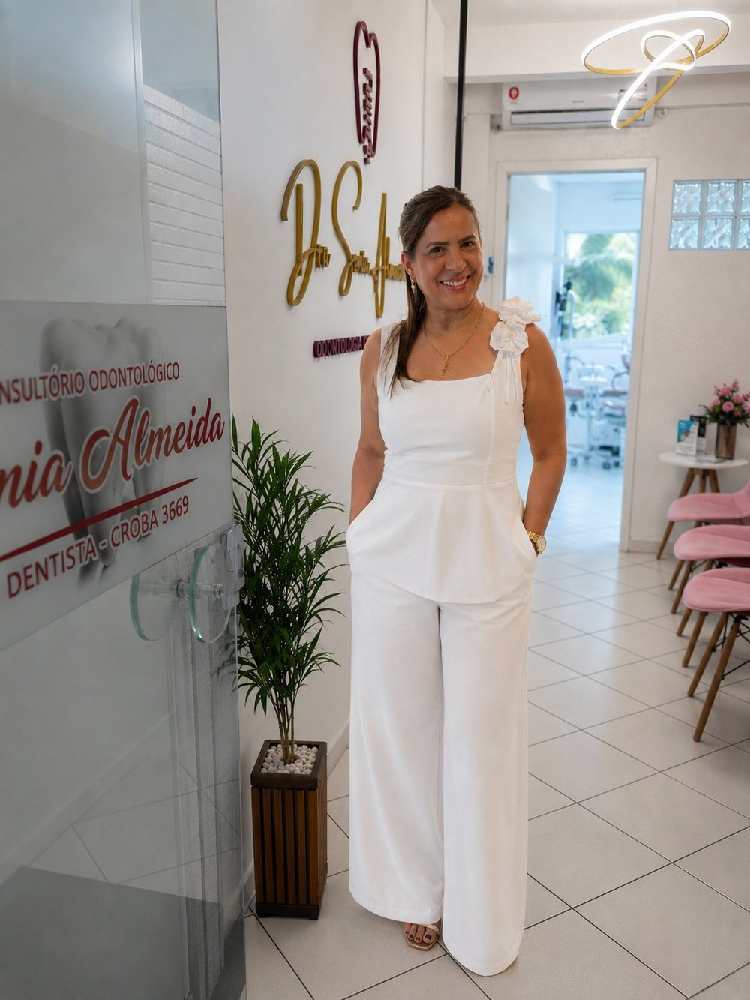
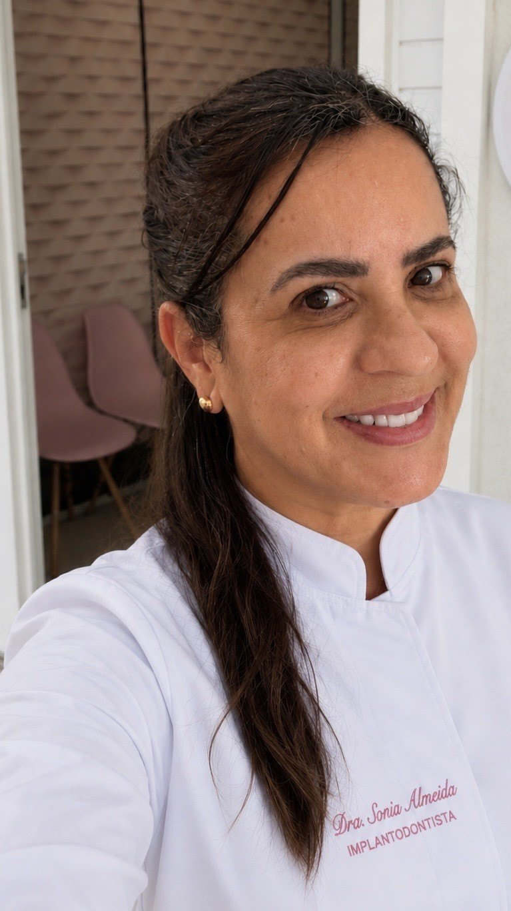

Início · Sobre
Sonia Almeida Santos, cirurgiã-dentista.
CRO-BA 3669. Especialista em Implantodontia, registrada no CRO-BA. Titular do consultório da Alameda Florença, na Pituba. Cada informação desta página traz a fonte.
CRO-BA
Registro

O número está gravado no vidro da porta do consultório — “Dentista - CROBA 3669” — e aparece no perfil dela na Doctoralia.
Ver o perfil na DoctoraliaImplantodontia
Especialidade

No painel do CRO-BA, Sonia Almeida Santos aparece com a especialidade Implantodontia, no endereço da Alameda Florença, 93, na Pituba. O jaleco dela traz bordado “Implantodontista”.
Ver o painel do CRO-BAConsultório próprio
O consultório
- Empresa: Almeida Odontologia Especializada Ltda., nome fantasia “Consultório Odontológico Dra. Sonia Almeida”.
- Abertura: 28/10/2022, com a Dra. Sonia como titular e sócia-administradora, sem outros sócios.
- Endereço: Alameda Florença, 93, sala 102, Pituba, Salvador.
- Na parede: o logotipo “Dra. Sonia Almeida — Odontologia Especializada”.
“[…] muito obrigada pela avaliação e, principalmente, pela confiança de tantos anos! É uma alegria saber da sua satisfação.”Resposta da Dra. Sonia no Google · ver na ficha · a uma paciente antiga
Na voz dela
Como ela fala
“É gratificante saber que nosso propósito de cuidar com acolhimento, atenção e excelência é percebido por você. Muito obrigada pela confiança!”Resposta da Dra. Sonia no Google · ver na ficha
“Fico muito feliz em saber que você se sentiu bem acolhida e confortável. É muito especial para mim poder cuidar de você!”
Resposta da Dra. Sonia no Google · ver na fichaTransparência
Como conferir
- Especialidade: painel oficial de especialistas do CRO-BA.
- Número de registro: perfil na Doctoralia e vidro da porta do consultório.
- Consultório e data de abertura: cadastro da Almeida Odontologia Especializada na Receita Federal.
- Avaliações, respostas e horário: ficha do consultório no Google.
Dúvidas frequentes
Perguntas comuns
Qual é o registro da Dra. Sonia?
CRO-BA 3669. A especialidade Implantodontia está registrada no painel de especialistas do CRO-BA.
Desde quando existe o consultório?
A empresa atual, Almeida Odontologia Especializada, foi aberta em 28/10/2022. Nas respostas no Google, ela agradece a pacientes pela “confiança de tantos anos”.
Ela atende sozinha?
A Dra. Sonia é a titular do consultório. Nas avaliações, pacientes também elogiam a equipe.
Agende
Comece por uma avaliação, com hora marcada.
Consultório na Alameda Florença, 93, sala 102, Pituba. A equipe combina dia e horário pelo WhatsApp (71) 99238-9399.